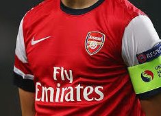

ARSENAL
About
Arsenal is not just any old football club. It is a by-word for history, tradition and success. It is not just about the past and present. It is very much a club for the future too.
Stadium
Arsenal paid £20,000 for a 21-year lease on six acres of land and, as part of the deal, agreed not to play at home on Christmas Day or Good Friday.
At the South end of the stadium, the practice pitch was replaced by an indoor training centre. The Clock End stand was redeveloped completely in 1989, to provide room for 48 executive boxes and further office space. In 1991, following the Taylor Report, work began to convert Highbury into an all-seater stadium.
A new, two-tier North Bank stand was opened in 1993, providing seating for 12,000 spectators, and also housing a shop and museum. Other modernisations have followed, including the introduction of two huge screens and electric scoreboards.
In 2006, after an emotional final season for the famous stadium, in which the team sported redcurrent jerseys as a nod to the first Arsenal teams to play there, the gates closes for the final time on Sunday, May 7.
100 Club
 Arsenal launched The 100 Club on Friday, to formally recognise some of the Club's greatest former players. Seventy-one retired players with more than 100 league appearances have been enrolled in The 100 Club, which was launched by Arsenal chairman Sir Chips Keswick and 1971 Double-winning goalkeeper Bob Wilson.
Alex Oxlade-Chamberlain

Alex Oxlade-Chamberlain’s highly promising career developed apace during the 2012/13 campaign. An exciting dribbler and perceptive passer with a great engine, he featured in central and wide midfield and attacking positions – making a great impact during his various runs in the side.
His fine first season saw him promoted to the England senior set-up and he played three times at Euro 2012. His excellent start to international life continued in 2013 when he scored a brilliant goal against Brazil at the Maracana Stadium.
{kind=link}
Premiership Table
View the current Barclays Premier League standings and look back at previous seasons, on the official website of the Premier League. Or take a look at the standings below
| CLUB | PLAYED | PTS | |
|---|---|---|---|
| Arsenal | 24 | 55 | |
| Man City | 23 | 53 | |
| Chelsea | 23 | 50 | |
| Liverpool | 24 | 47 |